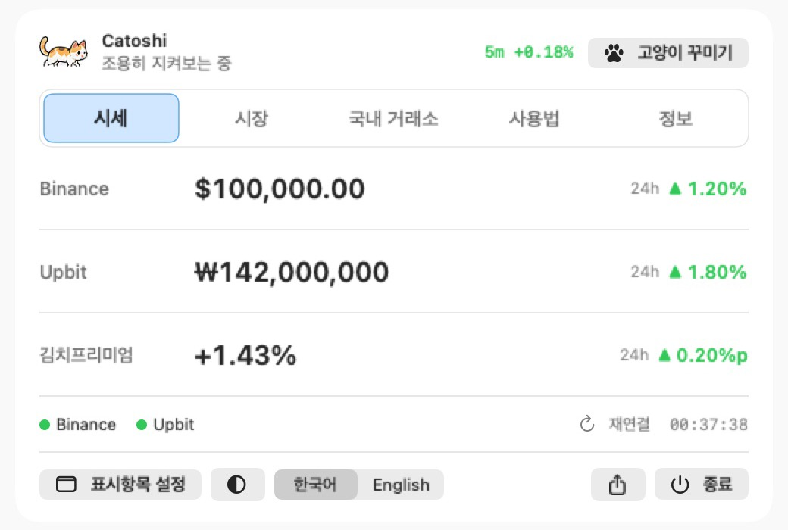

내 기기 안에서
계정, 클라우드 저장, 분석 도구를 넣지 않습니다. 기록과 설정은 사용자의 기기에만 남습니다.
Software studio · Korea
Small, kind software.
Studio RAYEONJIN은 일상 가까이에서 오래 곁에 둘 수 있는 도구를 만드는 소프트웨어 스튜디오입니다. 지금은 macOS 앱을 중심으로 작업하고 있으며, 다른 플랫폼의 작업도 준비되는 대로 이곳에 올립니다.
About
Studio RAYEONJIN의 앱은 개인적인 필요에서 시작합니다. 직접 쓰려고 만든 도구를, 같은 필요가 있는 분도 쓸 수 있도록 공개합니다.
필요에 맞으면 편하게 써 주세요. 써 보시고 의견이 있다면 Telegram으로 남겨주시면 반갑게 읽겠습니다.
만드는 것의 종류는 달라도, 모든 작업은 아래 세 가지 원칙을 지킵니다.
계정, 클라우드 저장, 분석 도구를 넣지 않습니다. 기록과 설정은 사용자의 기기에만 남습니다.
무엇이 실행되는지 누구나 열어볼 수 있도록 소스를 공개합니다. 사용 범위는 작업마다 라이선스로 밝힙니다.
변경 이력, 알려진 문제, 데이터 출처, 라이선스를 문서로 남깁니다. 확인하지 못한 것은 확인하지 못했다고 적습니다.
Works
macOS 앱은 완성된 설치 파일 대신 소스로 배포합니다. 무료 Apple 개발 도구로 각자 Mac에서 빌드해 쓰며, 자세한 방법은 각 앱의 설치 가이드에 있습니다.

가상 시세로 재현한 화면입니다.
Local-first notes for macOS.
빠르게 적고, 나중에 다시 이어 붙이는 노트. Markdown은 필요할 때만 쓰고, 선택적으로 로컬 AI가 생각 사이의 연결을 찾아줍니다. 원본 텍스트를 안전하게 지키는 것을 가장 먼저 생각합니다.
새로운 앱과 다른 플랫폼의 작업도 준비되는 대로 이곳에 올립니다. 소식은 GitHub과 Telegram에서 먼저 전합니다.
Support
작업이 마음에 드셨다면 자발적인 응원을 보내주실 수 있어요. 다음 작업을 만드는 데 큰 힘이 됩니다.
후원은 사용권이나 기능 제공의 대가가 아니며, 기능·업데이트·지원 우선순위에 차이가 없습니다.
FAQ
네. 받고 빌드해서 쓰는 데 비용이 들지 않습니다. 다만 작업마다 라이선스가 달라요. Catoshi는 비상업적 개인 사용만 허용하고, MemoWeaver는 Apache-2.0입니다. 각 저장소의 LICENSE를 확인해 주세요.
해당 작업의 GitHub 저장소나 Telegram으로 알려주세요. 사용 중인 버전과 환경, 증상과 오류 메시지를 함께 적어주시면 큰 도움이 됩니다. 응답 시간은 보장하지 못하는 점 양해 부탁드려요.